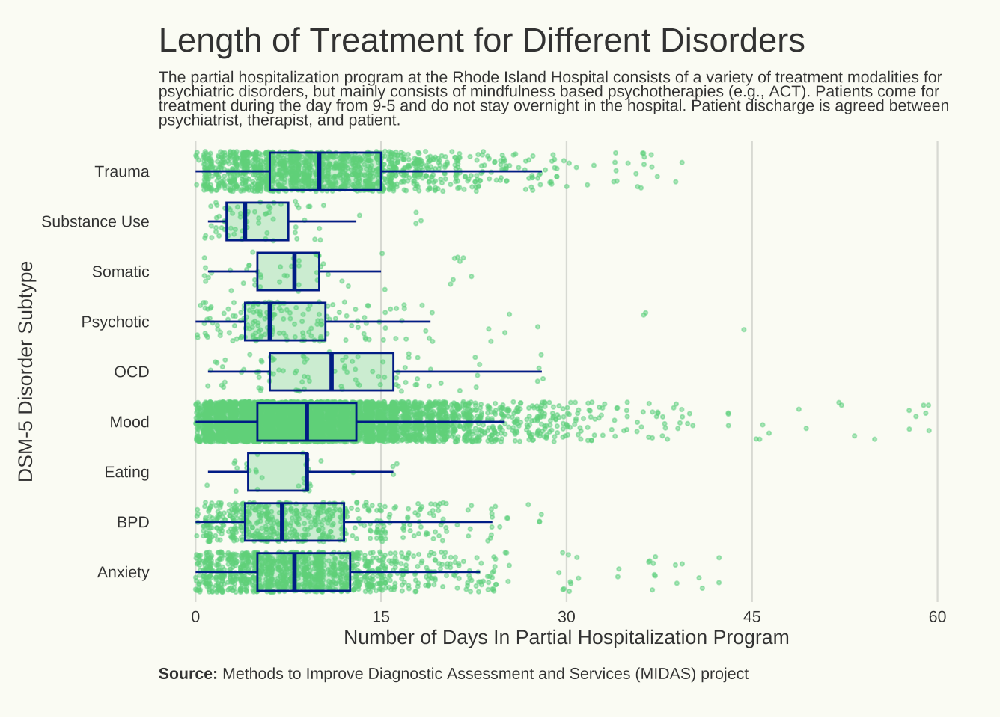

This is a series of R Markdowns dipicting code used for a final project in a Design for Data Visualization course BMI 787.

Note. Other = OCD, Eating Disorders, Somatic Disorders, and Psychotic Disorders; None = No other co-occuring disorder.
Pre (red) and Post (green) scores of depression via self report for different DSM diagnoses.
Hayes, S. C., Luoma, J. B., Bond, F. W., Masuda, A., & Lillis, J. (2006). Acceptance and commitment therapy: model, processes and outcomes. Behaviour research and therapy, 44(1), 1–25. https://doi.org/10.1016/j.brat.2005.06.006
Price, C. M. (2022). Participants’ experiences of group therapy in a partial hospitalization program: “It was impactful” ProQuest Information & Learning. In Dissertation Abstracts International Section A: Humanities and Social Sciences (Vol. 83, Issue 8–A).
Morgan, T. A., Dalrymple, K., D’Avanzato, C., Zimage, S., Balling, C., Ward, M., & Zimmerman, M. (2021). Conducting outcomes research in a clinical practice setting: The effectiveness and acceptability of acceptance and commitment therapy (ACT) in a partial hospital program. Behavior Therapy, 52(2), 272–285. https://doi-org.ezproxy.uky.edu/10.1016/j.beth.2020.08.004
Murphy, J. W., Corey, L. C., & Sturgeon, M. J. (2022). Evaluation of outcomes for military mental health partial hospitalization program. Military Psychology, 34(1), 91–97. https://doi-org.ezproxy.uky.edu/10.1080/08995605.2021.1971939